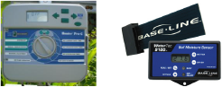

Time-Based With a Soil Moisture Sensor Information

Uses an automatic timer with a soil moisture sensor. The sensor measures soil moisture and reports to the controller if too wet; if too wet, irrigation does not occur.
Time-based with soil moisture sensor irrigation resources
Smart irrigation controllers: how do soil moisture sensor (SMS) irrigation controllers work? http://edis.ifas.ufl.edu/ae437